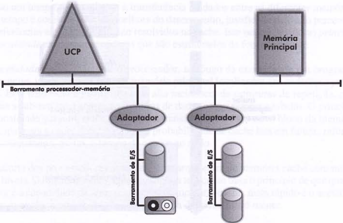
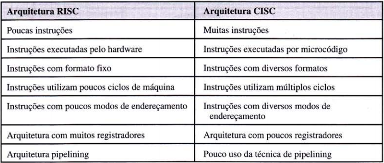

O sistema operacional então serve de interface entre o ususario e os recursos de hardware,
tornando esta comunicação transparente ou imperceptivel e permitindo ao usuario um trabalho mais eficiente e
com
menos possibilidades de erros.
não é só no controle do acesso a hardware compartilhado que o sistema operacional atua, ele nos permite
executar
varias tarefas, como operacional atual, eles nos permite executar varias tarefas, como imprimir um documeto,
copiar um arquivo pela ineternet ou processar uma planilha, entre outros, O SO deve ser capaz de controlar a
execução concorrente de todas essas tarefas.
Ainda podemos dizer que, embora alguns programas sejam escritos baseados nas instruções de um determinado processador, será responsabilidade do sistema operacional executar tarefas básicas do micro, ou seja, ensinar ao processador como desenhar uma janela ou imprimir um documento.
A evolução dos processadores de entrada/saída permitiu que, enquanto um programa esperasse por uma operação de leitura/gravação, o processador executasse um outro programa. A técnica de compartilhamento da memória principal e processador deu se o nome de multiprogramação. A multiprogramação evoluiu, preocupada em oferecer aos usuários tempos de resposta razoáveis e uma interface cada vez mais amigável. Para tal, cada programa na memória utilizaria o processador em pequenos intervalos de tempo. A esse sistema de divisão de tempo do processador chamou-se time-sharing (tempo compartilhado).
Monoprogramáveis ou Monotarefa podem executar apenas um programa por vez. Para que um usuário possa executar outro programa, deverá aguardar a finalização do programa corrente Sistemas Multiprogramáveis ou Multitarefa: os recursos computacionais são compartilhados entre os diversos usuários e suas aplicações. Podemos observar o compartilhamento de memória e do processador. Nesse caso, o compartilhamento de tempo no processador é distribuído. Assim, o usuário tem a impressão que vários processos estão sendo executados simultaneamente. Um dos processos ocupa o processador enquanto os outros ficam enfileirados, aguardando a sua vez de entrar em execução. Cabe ao sistema operacional o papel de gerenciar de forma ordenada e protegida o acesso concorrente aos recursos disponíveis. A grande diferença entre os dois tipos de sistemas é que em sistemas fortemente acoplados existe uma memória compartilhada por todos os processadores, enquanto nos fracamente acoplados, cada sistema tem sua própria memória individual.
sistema operacional embarcado: um SO sortware que so funciona em um hardware especifico ex: dvd, tv, carro, celular iphone, ou seja não tem como usar um SO de uma geladeira em uma tv e etc..
é capacidade de executar a mesma instrução de dois processadores distintos ou mais da mesma marca.
sistemas Monoprogramaveis ou monotarefas: permite que todos os recursos do sistema fiquem exclusivamente a uma unica tarefa. sistemas multiprogramaveis ou multitarefas: varias aplicações compartilham os mesmo recursos sistemas multilos procesadores: pode possuir duas ou mais UCP's interligadas e trabalhando em conjunto, esse tipo de sistema permiti executar varios programas ao mesmo tempo, subdividindo em partes para serem executadas simutaneamente em mais de um processador. e pode ter dois tipos. *fracamente acplados: hardware distintos e interconectados por uma mesma linha de comunicação. pode possuir ate mais de dois sistemas interligados, seus processadores estão em arquiteturas diferentes interligados por cabos interconexão * fortemente aclopados: ta no mesmo hardware e no mesmo sitema operacional. existe mais de um processador, onde eles compartilham apenas uma memoria e um sistema operacional que gerencia os dispositivos de E/S. Quando os processadores são iguais podemos chama-los sistema simetrico, mas quando são processadores diferentes chamados assimetricos.
volte para o topo da paginagerencia todo o sistema computacional, e controla e executa instruções na memoria principal. tambem controla e executa as instruções na memoria principal. dentro do processador é composto por: unidade de controle, unidade logica e arimética, registradores unidade de controle: responsavel por gerenciar as atividades dos componentes do computador, como gravação de dados em disco ou a busca de isntruções na memoria. Unidade lógica e aritmetica: é responsavel pela realização de operações testes e comparações e aritmeticas, somas e subtrações. registradores são dipositivos com a função de armazenar dados temporariamente.
Contador de instruções (CI) ou program counter (PC) => contém o endereço da próxima instrução que o processador
deve buscar e executar.
Apontador de pilha (AP) ou stack pointer (SP) => contém o endereço de memória do topo da pilha.
memory address register, através do conteúdo deste registrador a unidade de controle sabe qual a célula de
memória que será acessada.
MBR => memory buffer register, este registrador é utilizado para guardar o conteúdo de uma ou mais células
de
memória.
MAR => memory address register, através do conteúdo deste registrador a unidade de controle sabe qual a
célula de memória que será acessada.
A memória cache armazena uma pequena parte do conteúdo da memória principal. Toda vez que o processador faz
referência a um dado armazenado na memória, é verificado, primeiramente, se o mesmo encontra-se na memória
cache. Caso encontre, não há necessidade do acesso à memória principal, agilizando o acesso.
Existe uma hierarquização de cache, em Cache L1, com pouco espaço para armazenamento e altíssima velocidade.
E
em Cache L2, com maior capacidade de armazenamento, porém, com uma velocidade de acesso inferior a Cache L1
Essa memória é um meio permanente, isto é, não volátil.
Enquanto a memória principal precisa ser
energizada
constantemente, a memória secundária não
É o meio de comunicação compartilhado que permite a comunicação entre as unidades funcionais de um sistema computacional.
RISC – Reduced Instruction Set Computer Um processador com essa arquitetura se caracteriza por possui poucas instruções de máquina, em geral bastante simples, que são executadas diretamente pelo hardware.
CISC – Complex Instruction Set Computer Possuem instruções mais complexas que são interpretadas por microprogramas
 volte para o topo da pagina